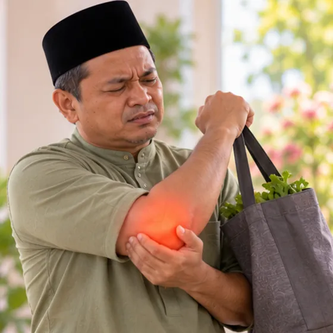
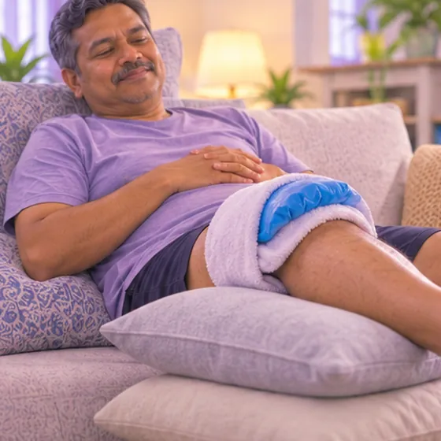

Tennis elbow
Pain on the outer side of the elbow from overusing the forearm muscles and tendons
What it is
Doing the same arm and wrist movements again and again can strain the tendons at the outer elbow, causing pain when you grip, lift or twist, even if you never play tennis.
- Outer side of the elbow
- After repeated arm use
- Pain when gripping or lifting
- Which doctor
- Family doctor; bone and joint doctor (orthopaedic doctor)
- Common in
- Adults who use the arm and wrist a lot: racket sports, computer or manual work
- Contagious
- No
- Course
- Often improves slowly over weeks to months, sometimes longer; it can come back
Common signs

Pain at the elbowElbow pain 
Weak, clumsy gripHand weakness
More signs
- The pain can spread down the forearm toward the wrist
- Pain when you grip, shake hands, turn a door handle or lift a cup
- The elbow aches after using the arm, and often feels better at rest
Why it happens
- Overuse: repeating the same gripping, lifting or wrist movements
- Racket sports, but also painting, carpentry, cooking, gardening and using a computer mouse
- A sudden rise in how much you use the arm
- Poor technique, or tools and equipment that do not suit you
- It is more common in middle age; sometimes no clear cause is found
See a doctor first if
- Arm pain with chest pain, trouble breathing, a cold sweat or feeling faint: call 999
- Elbow hurt in a fall or hit and it looks out of shape or will not move: go to hospital now
- Hot, red, swollen elbow, especially with a fever: see a doctor now
- Numbness or tingling in the hand or fingers, or a weak hand: see a doctor soon
- Pain that wakes you at night or keeps getting worse despite rest: see a doctor
- No better after several weeks of looking after it yourself: see a doctor
If any apply, please see a doctor before a session.
This page is general information. Please keep taking your normal medicine and keep seeing your doctor.
Keep taking your normal medicine and keep seeing your doctor. Our session is a gentle support and does not replace medical care.
Looking after yourself

Rest the sore jointJoint rest 
A cold pack on the sore spotCold therapy
More ways to look after yourself
- Change how you do tasks: use both hands, lift with the palm facing up, and take regular breaks
- Ask a doctor or physiotherapist about a supportive strap and gentle stretching and strengthening
- Return to sport or work slowly; ask your doctor or pharmacist before taking pain medicine
Tell your therapist
- Numb or tingling arm
- Broken, red or sore skin
- Blood-thinning medicine
- Pacemaker or metal implant
- Pregnancy
Your therapist will go through this with you before starting.
Related conditions
- Brachial plexus (shoulder-arm nerve) injury
- Ulnar nerve injury (little-finger side of the hand)
- Lost or severed finger
- Galeazzi fracture (forearm and wrist joint)
- Dislocated shoulder
- Broken shoulder blade
- Dislocated shoulder-top joint (AC joint)
- Rotator cuff injury
- Worn meniscus (knee)
- Meniscus cyst (knee)
- Flat feet
- Restless legs syndrome
References: General information based on public health sources such as Mayo Clinic, NHS, Cleveland Clinic and NCBI StatPearls.
Page updated: 2026-10-31